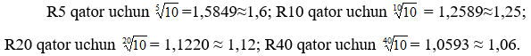
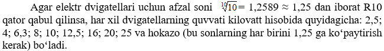
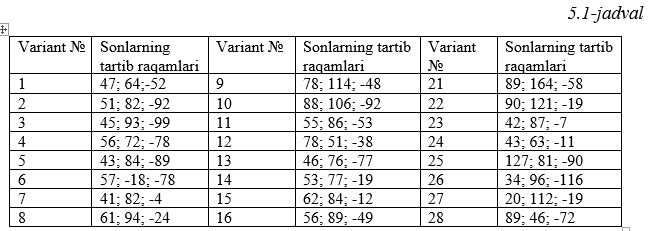
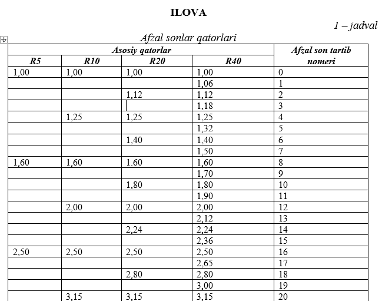
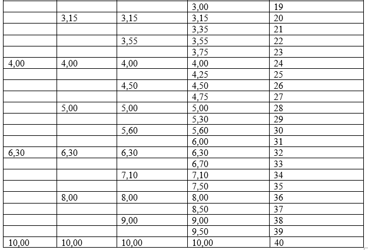

Mashg‘ulotning maqsadi: afzal sonlarning asosiy va qoʻshimcha qatorlari bilan tanishish, ularning
hosil
qilinishi, qoʻllanilishi va afzalliklarini oʻrganish.
Barcha ishlab chiqarish jarayonlari, ularni bajarishda ishlatiladigan texnika vositalari (jihozlar,
moslama, qurol va shunga oʻxshashlar) va zagotovka materiallari oʻzaro bog’liqdir. Masalan, chiviq
material (armatura) ning oʻlchamlari kesuvchi qurolning oʻlchamiga, dastgohning gabarit oʻlchamiga ham,
quvvatiga ham ta‘sir etadi. Ana shu sababli buyumning asosiy materiali uchun tegishli sonlar qatorini
tuzib olish yagona standartlashtirishning eng muhim vazifalaridan hisoblanadi. Bir holda asosiy parametr
sifatida chiziqli oʻlcham, boshqa hollarda quvvat, tezlik yoki og’irlik va hokazolar olinishi mumkin.
Mamlakatimiz xalq xoʻjaligining hamma tarmoqlarida ishlab chiqariladigan mahsulot oʻlchamining son
qiymatlarida va boshqa xilma-xil tavsiflariga doir son qiymatlaridagi turli-tumanlikdan qutilish uchun
afzal sonlar deb ataladigan sonlardan foydalaniladi.
Ushbu sohadagi asosiy standart GOST 8032-84 "Afzal qilingan raqamlar va afzal raqamlarning
qatorlari."
Ushbu standart texnik ob'ektlar parametrlari (mahsulotlar, texnologik jarayonlar va boshqalar) ning
gradatsiyalari va individual qiymatlarini belgilashda ishlatilishi kerak boʻlgan afzal qilingan raqamlar
soni va seriyasini, shuningdek, afzal qilingan raqamlardan foydalanish imkonsiz yoki amaliy boʻlmagan
hollarda ishlatiladigan raqamlar seriyasini belgilaydi. Ushbu standart GOST 8032-84 shakllanish
shakllaridan farq qiluvchi oʻzgaruvchan qiymatlarning tabiiy koʻrinishi texnik ob'ektlarning
parametrlariga taalluqli emas.
ISO tavsiyalari asosida tuzilgan ГОСТ 8032–56 da 4 ta afzal sonlar qatori koʻrsatilgan (ilovadagi
1-jadval); bu qatorlar turli maxrajli geometrik progressiyalarga asoslanib tuzilgan boʻlib, quyidagicha
belgilanadi: R5; R10; R20; R40 (R80, R160 qatorlar maxsus zarurat boʻlgandagina ishlatiladi).
Ma‘lumki, geometrik progressiya, har bir son oʻzidan oldingi sonni progressiyaning maxraji deb
ataladigan bir xil songa koʻpaytirish yoʻli bilan hosil qilinadigan sonlar qatoridir. Bu qatorlarga doir
progressiya maxrajlari 10 ning yonidagi songa teng koʻrsatkichli ildizi tarzida belgilanadi.

Normal chiziqli oʻlchamlarni (ГОСТ 6636 – 60) tuzishda R40 asos qilib olingan. Demak, 1 mm dan
boshlab,
oʻlchamlar 1,06 marta oshadigan (yaxlitlangan) boʻladi: 1; 1,06; 1,12; 1,18; 1,25; 1,32; 1,4; 1,5 va
hakozo.
Sanoatning hamma tarmoqlarida parametrlarning bir qiymatidan ikkinchi qiymatga oʻtish yagona
tartibining
oʻrnatilishi oʻlchamlar sonini kamaytiradi, boshlang’ich materiallarni tejab sarflashga va turli
buyumlarning, material, yarim fabrikat, transport vositalari, ishlab chiqarish jihozlarining gabaritlari
va shunga oʻxshashlari jihatidan oʻzaro bog’lanishini eng ma‘qul tarzda hal etishga imkon beradi.

Sonlarning bu qatori qabul qilinishi bilan barcha quvvatli dvigatellar ishlab chiqariladi degan
ma‘no
chiqmaydi. Eng muhimi shundaki, bu tartib iste‘molchiga kerak boʻlgan dvigatel xilini istalgan vaqtda
ishlab chiqarishga imkon beradi. Mashinasozlik va asbobsozlikda chiziqli va burchak oʻlchamlar uchun paz
oʻlchamlari, radius va pog’ona oʻlchamlari, shuningdek, kvalitet, joizliklar qiymatlari va shunga
oʻxshashlar uchun olinadigan afzal sonlar kesuvchi va oʻlchash asboblarining (parma, razvertka, zenker,
kalibr va boshqalarning) sonini (xillarini), moslamalarni, shtamp va boshqa xil texnik jihozlarning
sonini kamaytirishga yordam beradi. Buyumlarning konstruktsiyalarini ishlab chiqishda va materiallarning
mexanikaviy xossalariga nisbatan tavsifnomalarini tuzishda afzal sonlardan foydalanish mustahkamlikka
nisbatan tipik hisoblashlarni yaratishga imkon beradi.
Afzal sonlar qatorlariga asoslanib, ishlab chiqarish jihozlarining tiplari aniqlanadi va shu yul
bilan
buyumlarning oʻlchamlari bilan dvigatellarning quvvati, uskunalarning unumdorligi va boshqa
koʻrsatkichlar orasidagi monandlik masalasi hal qilinadi.
Mahsulot standartlarining afzal sonlar asosida hal etilishi mashinalardagi detall, uzel va
agregatlarning oʻzaro almashinuvchanlik xossasiga ega boʻlish imkoniyatini yaratadi.
Ilovadagi 1-jadvalda 1–10 oraliqda R40 qatordagi afzal sonlarning tartib raqamlari keltirilgan.
Afzal
sonlarning boshqa oraliqdagi tartib raqamlari jadvaldagi sonlarga 40, 80, 120 va h.k., yoki –40, -80,
-120 va h.k. qiymatlarni qoʻshish yoxud ayirish orqali hosil qilinadi. Masalan, 16 sonining tartib
nomeri 8+40=48 ga teng, 160 soniniki 8+80=88 ga teng va h.k. 1,6 sonning tartib nomeri 8 – 40 = - 32 ga
teng, 0,016 soniniki esa 8–80 = - 72 ga teng.
Tartib nomerga koʻra son qiymatini topish quyidagicha amalga oshiriladi:
a) musbat tartib raqamdan 40 soni, to 1 – 40 oraliqdagi son hosil boʻlguncha ayirish lozim. Soʻngra
hosil boʻlgan tartib raqamga mos keladigan sonning qiymatini 1-jadvaldan aniqlanadi. Jadvaldan topilgan
sonni 10, 100 va h.k.ga koʻpaytirib, aniqlanishi lozim boʻlgan sonning qiymati topiladi. Misol, sonning
tartib nomeri 88. Undan 40 sonni ikki marta ayiramiz va natijada 8 hosil boʻladi. Ushbu tartib raqamga
jadval boʻyicha 1,6 qiymat mos keladi. 1,6 sonni 100 koʻpaytirsak, tartib raqam 88 ga mos keladigan,
ya‘ni izlangan son 160 ni hosil qilamiz.
b) manfiy songa 40 ning qiymatini shuncha marta qoʻshamizki, to 1–40 chegaralarida son hosil
boʻlmaguncha. Yuqorida amalga oshirilgan ishlardek, hosil boʻlgan tartib nomerga koʻra jadvaldan unga
mos keladigan sonni aniqlaymiz, soʻngra uni 10, 100 va h.k. larga boʻlib axtarilayotgan sonni topamiz.
Misol, tartib raqam – 72 ga teng. 40∙2 = 80-72 = 8. Tartib raqam 8 ga jadval boʻyicha 1,6 qiymat
toʻgri
keladi. 1,6 ni 100 ga boʻlib –72 tartib nomerga 0,016 afzal soni mos kelishini aniqlaymiz.
Yuqorida bayon qilingan qoidalarni qoʻllab, hamda ilovadagi 1-jadvaldan foydalanib quyidagi
misollarni
yechilishini tahlil qiling.
1 – misol. Mahsulot quyidagi oʻlchamlarda tayyorlanishi lozim: 1,25; 1,6; 2; 2,5; 3,15; 4; 5; 6,3.
Uning
oʻlchamlari qaysi qatorga mansub?
Yechish. Berilgan oʻlchamlarga quyi og’ishi 1,25 va yuqori og’ishi 6,3 boʻlgan 10- asosiy qator mos
keladi. Bu qator quyidagicha belgilanadi:
R10(1,25 … 6,3).
2 – misol. Mahsulotning oʻlchami 125 va φ ning parametri 1,06 ga teng boʻlishi lozim. Qatorning
belgisini toping.
Yechish. Ushbu maxraj φ = 1,06 ga 40 – asosiy qator toʻgri keladi va u quyidagicha belgilanadi:
R40 (… 125 …).
3- misol. Mahsulotning oʻlchamlari 100 dan boshlanib, oʻlchamlarning maxraji φ=2,5 ga teng. Ushbu
qatorning shartli belgisini aniqlang.
Yechish. Berilgan masala shartlariga koʻra, mazkur qatorga 5 - asosiy qatorning har qaysi ikkinchi
hadini oʻz ichiga olgan qator mos keladi. Uning shartli belgisi quyidagicha: R5/ 2 (100 …).
4–masala. 1-jadval hamda afzal sonlarning xossalaridan foydalanib, 3,55 va 6,3 sonlarni
koʻpaytiring.
Yechish. 3,55 soniga N 22 va 6,3 ga esa N32 mos keladi. 3,55 · 6,3 koʻpaytmasiga
N22+32
= N54 mosdir. 54
- tartib nomerga, tartib nomeri 54 – 40 = 14, ya‘ni 2,24·10=22,4 son toʻgri keladi.
5–masala. 3,553 ni hisoblang.
Yechish. Nnm= Nn·m formuladan foydalanib 3,55 3 = N
3·.22= N 66 = 10· N26 = 45 ni hosil qilamiz.
Mustaqil ishlash uchun masalalar:
1-masala. Mahsulot quyidagi oʻlchamlarda tayyorlanishi lozim: 2,00; 2,24; 2,50; 2,80;
3,15;
3,55; 4.
Uning oʻlchamlari qaysi qatorga mansub?
2-masala. Mahsulotning oʻlchami 25 va φ ning parametri 1,25 ga teng boʻlishi lozim.
Qatorning
belgisini
toping.
3-masala. Quyidagi tartib raqamlariga mos kelucvhi qiymatlarni aniqlang (har bir talaba oʻz
varianti
boʻyicha ishlaydi, 11.1-jadval):

4–masala. Ilovadagi 1-jadval hamda afzal sonlarning xossalaridan foydalanib, 1,40 va 5,60
sonlarni
koʻpaytiring.
5–masala. N m ni hisoblang (N va m ning qiymatlari oʻqituvchi tomonidan
berilgan variantlar boʻyicha
tanlanadi).


Mavzuni takrorlash uchun savollar:
1. Afzal sonlar qatorlari va ularning joriy qilinishi sabablarini ayting.
2. Arifmetik va geometrik progressiyalar boʻyicha tuzilgan afzal sonlar qatorlarining tuzish
tamoyillari, ularning xossalari toʻg’risida ma‘lumot berib, qoʻllanilishiga misollar keltiring.
3. Har xil qatorlar bir xil hadga ega boʻlishi mumkinmi? Bitta qatorning 1- va 2-, hamda 1- va
10-hadlarning oʻzaro nisbiy ayirmalari qanday oʻzgaradi? Bu nisbiy ayirmalarni % da aniqlang.
4. Buyumning qaysi parametrlari bosh, qaysilari asosiy parametrlar deyiladi?
5. Normal chiziqli oʻlchamlar qatorlarini tuzish tamoyillari va ularning shartli belgilari toʻgrisida
qisqacha ma‘lumot bering.